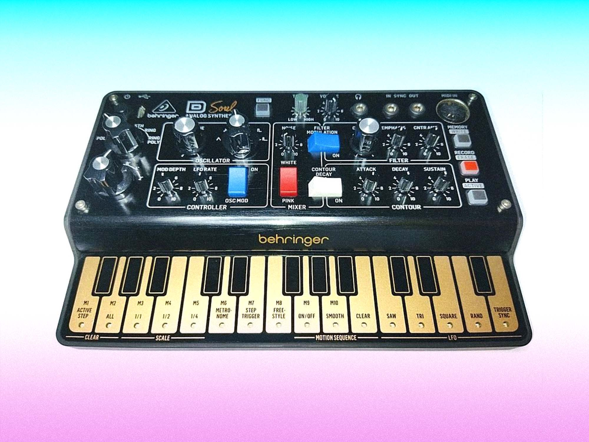

D MINI de Behringer: Minimoog de bolsillo con un secuenciador, filtro ladder y tres osciladores analógicos.
Behringer inicia la preventa de su D MINI, una versión compacta del Model D que cuenta con tres osciladores analógicos, un filtro escalera paso-bajo, un secuenciador de 16 pasos y 27 teclas táctiles. Se espera que esté disponible en agosto de 2026 a un precio estimado de 99€ o 99$.
El sintetizador compacto de Behringer basado en el Minimoog Model D, cuyo primer anuncio fue hace cuatro años bajo el nombre de Model D Soul, finalmente llega a preventa con su nombre final: D MINI.
La página oficial de Behringer ya tiene la hoja de producto y el instrumento fue presentado en su versión finalizada en la NAMM de enero del año 2026. Según las estimaciones de los distribuidores, la fecha de stock está prevista para el 17 de agosto de 2026.

El aspecto finalizado del esperado Behringer D MINI tras su paso por el NAMM 2026.Behringer D MINI continúa la tendencia de miniaturización que Behringer ha estado implementando exitosamente desde el lanzamiento de JT Mini, Pro VS Mini y CZ-1 Mini: Nos referimos a herramientas de síntesis analógica o híbrida en un formato ultracompacto y, lo más destacable, con precios asequibles.
La empresa trata por primera vez a la familia Minimoog in este formato con D MINI, aunque el modelo original Model D sigue comercializándose, pero más del doble de lo que se esperaba para su hermano menor.
El generador en D MINI: Fiel al original y analógico
El núcleo de Behringer D MINI está constituido por tres VCOs analógicos que ofrecen cinco formas de onda distintas: sierra, triángulo, cuadrada, pulso y shark; así como un generador de ruido blanco y rosa con control independiente del volumen.
El formato mini, que se caracteriza por su agilidad de uso, se mantiene gracias a un solo mando que controla los tres osciladores al mismo tiempo.
.jpg) Tres VCOs analógicos y el icónico filtro escalera controlados en un panel hiper-optimizado.
Tres VCOs analógicos y el icónico filtro escalera controlados en un panel hiper-optimizado.
El filtro escalera paso-bajo resonante (Low-pass ladder filter) es el componente más relevante de la herencia Minimoog, y aquí se encuentra con su capacidad para auto-oscilar y su tono cálido.
La arquitectura de modulación tiene un LFO con cuatro formas de onda que se pueden asignar a tono y filtro, una envolvente ADS de tipo Moog con un interruptor de relajación y control separado para la envolvente del filtro.
Las posibilidades expresivas del instrumento se extienden de manera significativa a través de los modos de voz: Modulación en anillo y en anillo polifónica, octavas, quintas, unísono y parafónico a tres voces. Para un instrumento de 99€ o $99, el selector de modos de voz es la característica que más distingue a D MINI del Model D original y de sus copias directas.
D MINI: Teclado, secuenciador y conectividad
El sintetizador compacto recién creado incluye un secuenciador de 16 pasos que tiene ocho memorias y graba el movimiento de los mandos. Este diseño posibilita la automatización de cambios en el filtro, el tono o cualquier otro parámetro directamente en el patrón.
.jpg) Conexiones USB-C, MIDI TRS y entrada/salida de sincronización para integración total en el estudio.
Conexiones USB-C, MIDI TRS y entrada/salida de sincronización para integración total en el estudio.
El teclado tiene 27 teclas que reaccionan a la velocidad y son táctiles. La unión de un secuenciador, la grabación de movimiento y los modos de voz polifónicos hacen que D MINI sea una herramienta mucho más versátil de lo que su tamaño y costo iniciales sugieren.
La conectividad incluye USB-C para alimentación y posible comunicación con editor, salida de auriculares, sincronización de entrada y salida para encadenarlo con otro equipamiento, y MIDI TRS mini de cinco pines.
Behringer aún no ha confirmado el precio oficial, pero la cifra de 99€ / 99$ se ha mantenido como referencia desde que fue anunciada en 2022.
Actualización del 10 de junio de 2026: Thomann ya ha verificado el precio en la cantidad esperada: una etiqueta muy atractiva.